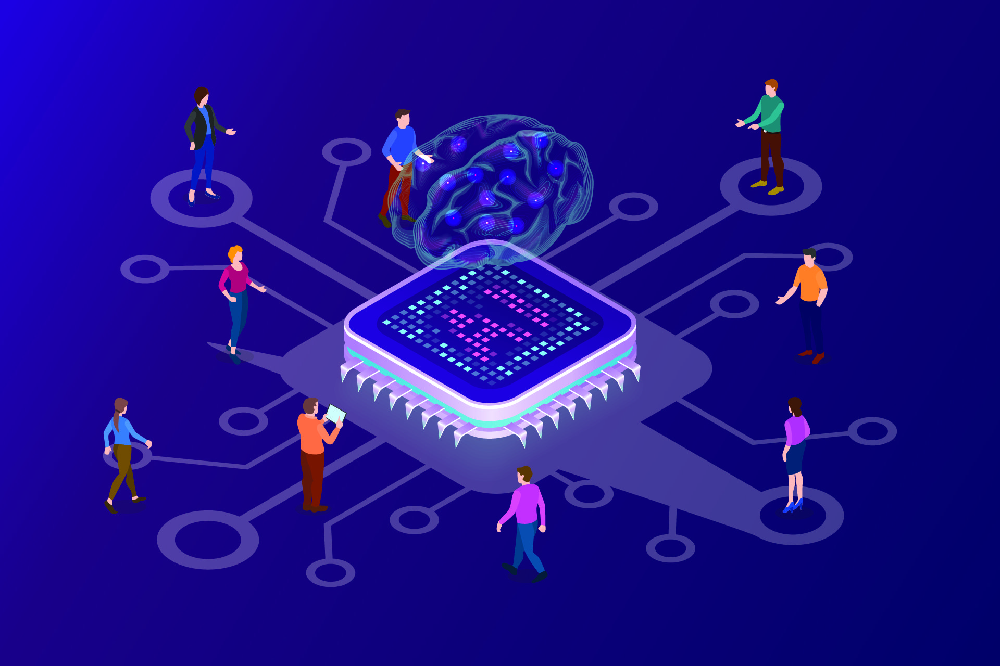

In the ever-evolving landscape of technology, Artificial Intelligence (AI) stands as a groundbreaking force, reshaping the very fabric of how we work and interact in society. As AI continues to advance at an unprecedented pace, it brings with it a wave of transformative effects that touch upon various aspects of our lives. This blog delves into the multifaceted influence of AI, exploring its impact on the future of work and society.
AI in the Workplace:
1. Automation and Efficiency:
AI's integration into the workplace is synonymous with increased efficiency and productivity. Routine and repetitive tasks can be automated, freeing up human resources to focus on more complex, creative, and strategic endeavors. From manufacturing to customer service, AI-powered automation is streamlining processes across industries.
2. Augmented Intelligence:
AI is not just about replacing human tasks; it's about enhancing human capabilities. Augmented intelligence involves collaboration between humans and AI, combining the strengths of both. AI systems can analyze vast datasets, providing valuable insights that human decision-makers can use to make informed choices.
3. Upskilling and Reskilling:
The rise of AI prompts a shift in the skillsets demanded by the job market. While some tasks become automated, new opportunities arise in AI development, data analysis, and AI system management. The emphasis is on upskilling and reskilling the workforce to adapt to the evolving demands of a technology-driven world.
AI and Society:
1. Improved Healthcare:
AI is revolutionizing healthcare by expediting diagnostics, personalized treatment plans, and drug discovery. Machine learning algorithms can analyze medical data more efficiently than ever, leading to quicker and more accurate diagnoses. AI's integration into healthcare has the potential to save lives and improve patient outcomes.
2. Enhanced Education:
In the realm of education, AI is a transformative tool. Personalized learning experiences, intelligent tutoring systems, and adaptive curricula are made possible by AI. By catering to individual learning styles and pacing, AI contributes to a more inclusive and effective educational environment.
3. Smart Cities and Sustainable Development:
AI plays a pivotal role in the development of smart cities, optimizing energy usage, traffic flow, and resource allocation. Through data-driven insights, cities can become more sustainable, efficient, and responsive to the needs of their residents. AI contributes to the creation of a connected and environmentally conscious urban landscape.